01 · ThresholdThe room is quiet.
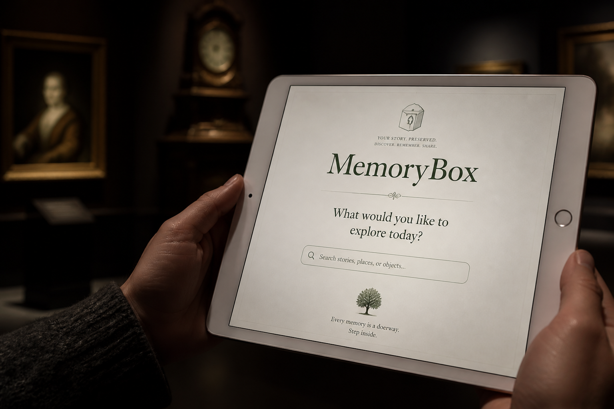
02 · You askTyped question + microphone.
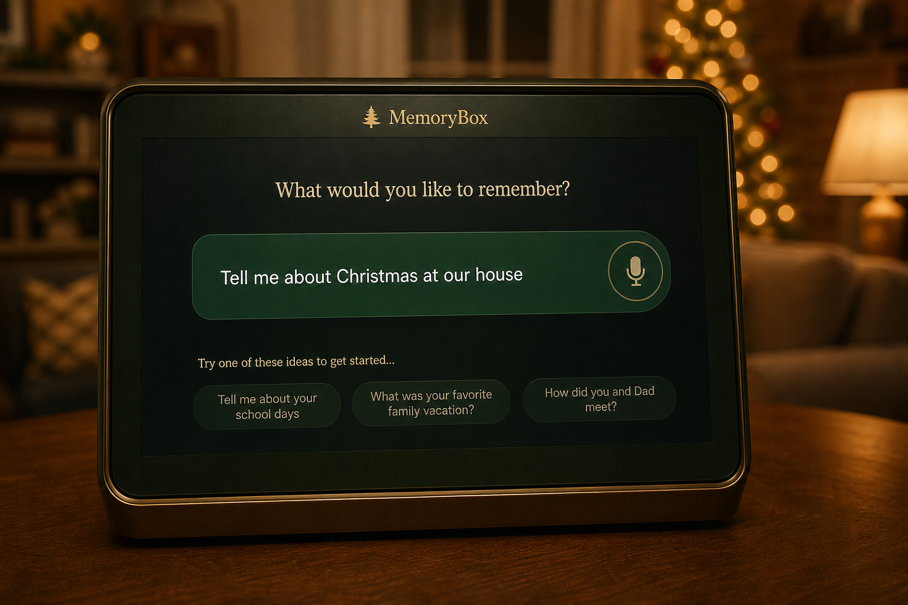
03 · ChristmasNarrative + 129 photos / emails / texts.
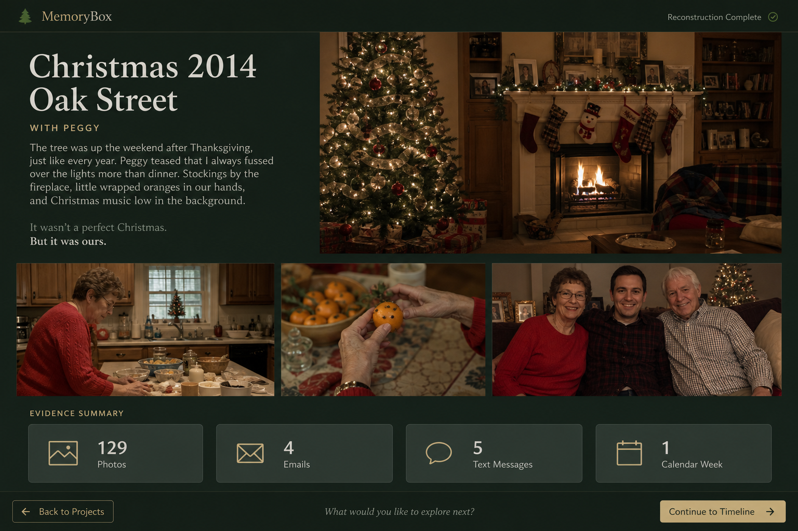
04 · EvidenceMail and texts — not a file browser.
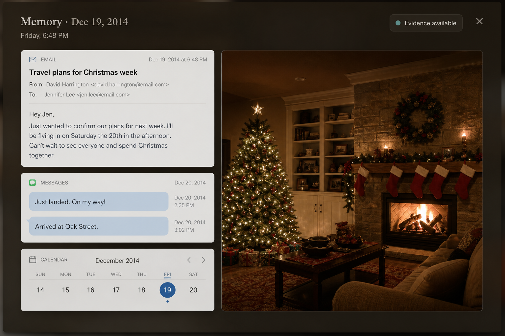
05 · One photoWhen was this taken?
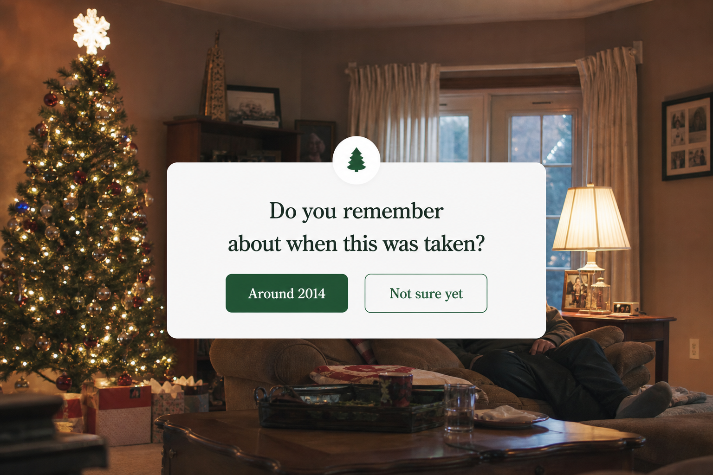
06 · GrandpaPresence from the archive.
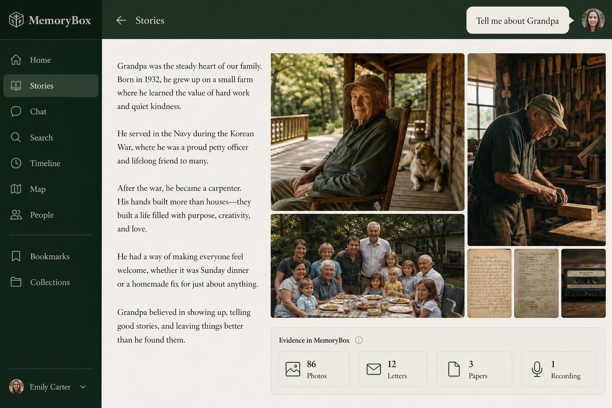
07 · SilenceGrandpa · 1998.
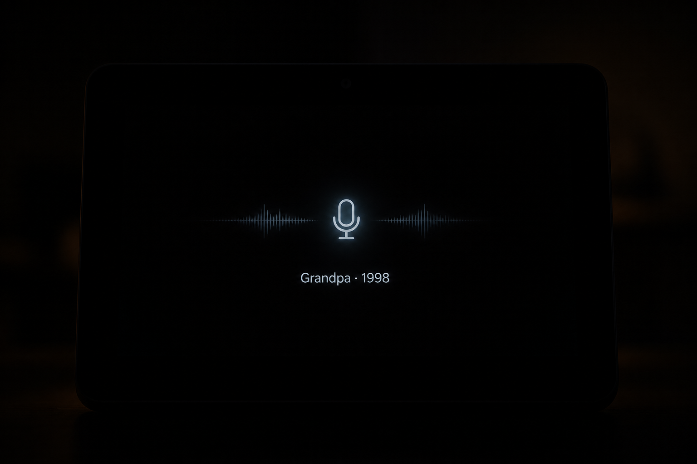
08 · Who is she?I don’t know this person with Grandpa.
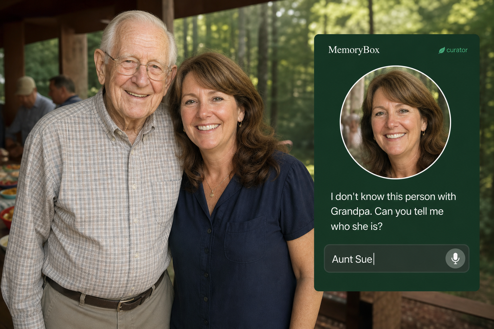
09 · Sue183 photographs.
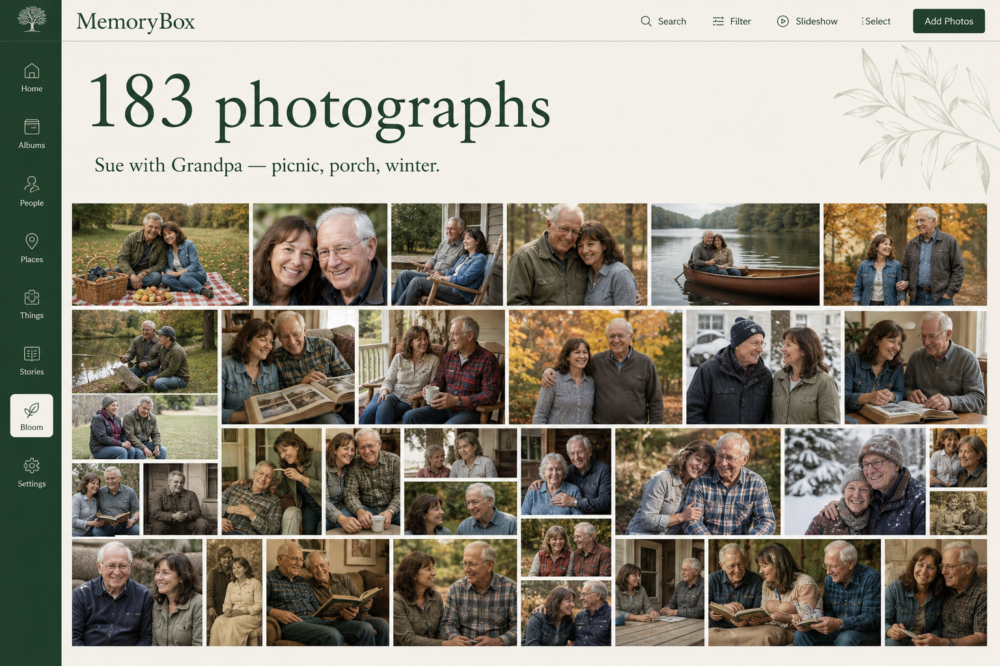
10 · Pocket watchMeaning before inventory.
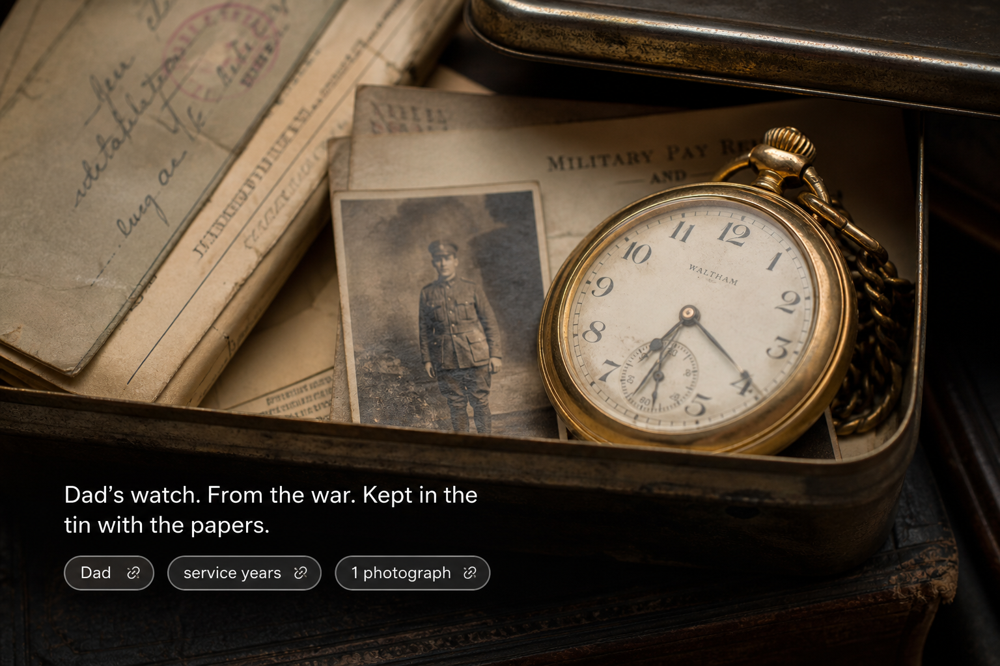
11 · Family nightSame archive. Shared light.
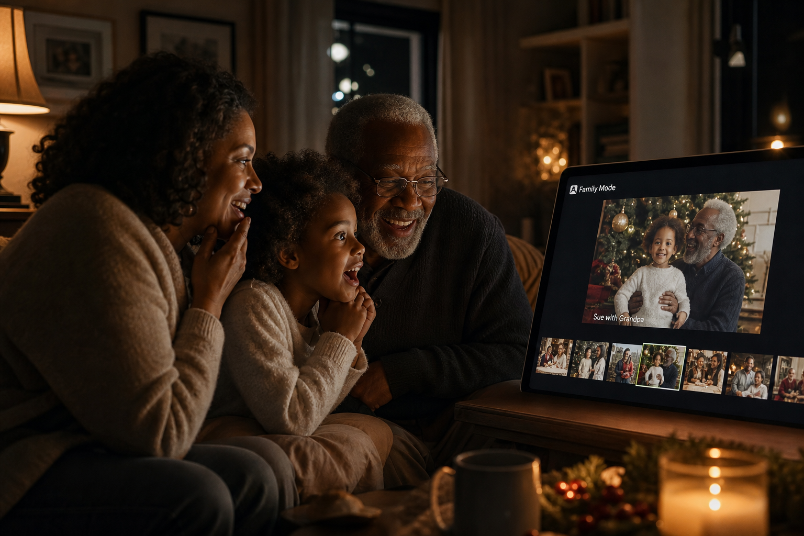
12 · Another questionThe door stays open.
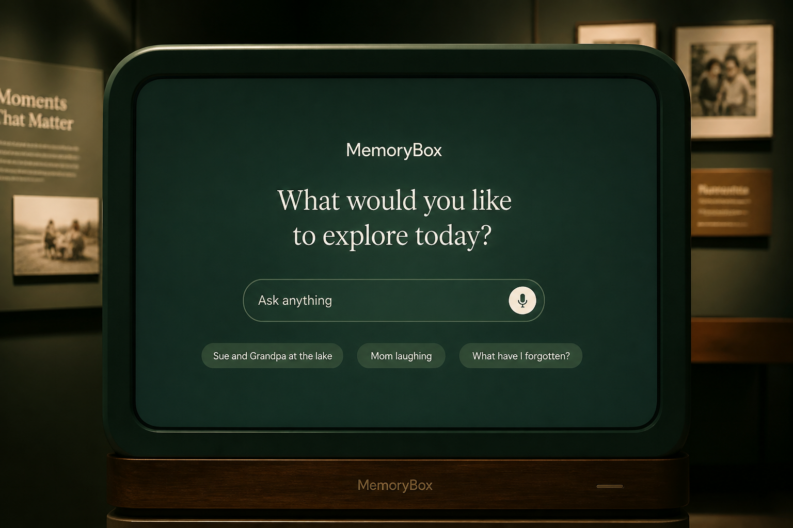